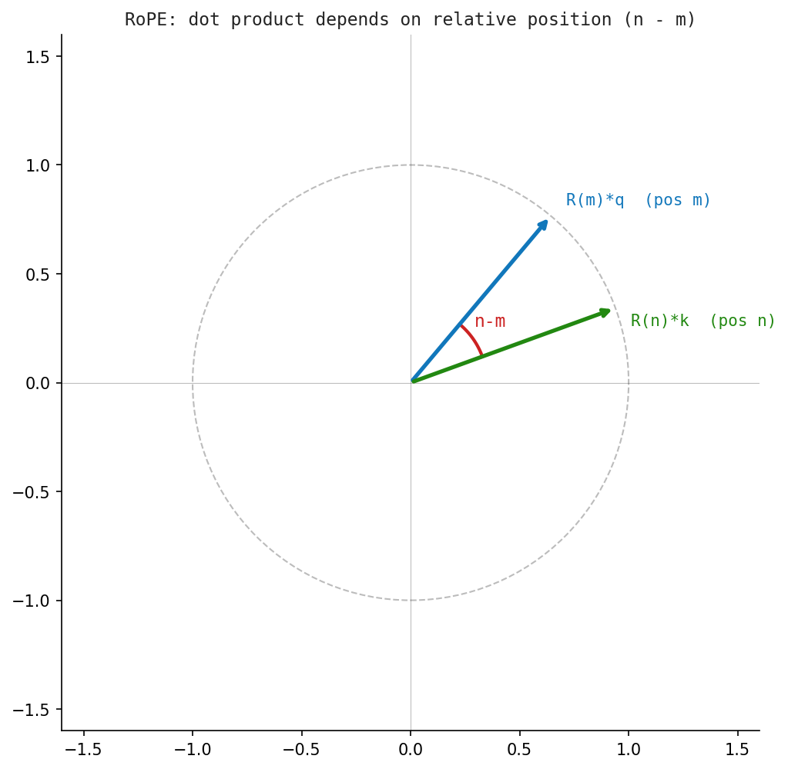

13 Modern GPT
The previous chapters built a complete GPT from scratch. Real production models add several refinements that improve efficiency, context length, and capability. This chapter surveys the most important innovations beyond the baseline transformer.
13.1 Rotary Positional Encoding (RoPE)
The sinusoidal positional encoding in Chapter 5 adds a fixed signal to each embedding before the attention layers. RoPE (Su et al., 2021) takes a different approach: it encodes position directly into the query and key vectors inside each attention layer by rotating them.
For a query vector \(q\) at position \(m\) and key vector \(k\) at position \(n\):
\[ \langle R_m q,\; R_n k \rangle = \langle q, R_{n-m} k \rangle \]
where \(R_\theta\) is a block-diagonal rotation matrix. The dot product depends only on the relative position \(n - m\), not the absolute positions. This gives the model a natural sense of distance between tokens.
Key advantages of RoPE:
- Generalises to sequences longer than those seen during training.
- No extra parameters — the rotation is deterministic.
- Compatible with linear attention variants.
- Used in LLaMA, Mistral, Qwen, and most open-weight models.
In 2D, a rotation by \(\theta\) looks like:
\[ R_\theta = \begin{bmatrix} \cos\theta & -\sin\theta \\ \sin\theta & \cos\theta \end{bmatrix} \]
For a \(d\)-dimensional vector, \(d/2\) independent 2D rotations are applied to pairs of dimensions.

13.2 Multi-Query and Grouped-Query Attention
Standard multi-head attention (Chapter 7) creates separate \(Q, K, V\) projections for every head. The key and value matrices dominate GPU memory during inference.
Multi-Query Attention (MQA) (Shazeer, 2019) uses a single \(K\) and \(V\) shared across all heads, reducing the KV cache by a factor of \(H\) (number of heads).
Grouped-Query Attention (GQA) (Ainslie et al., 2023) is a middle ground: \(G\) groups of heads share a single \(K, V\), where \(1 \leq G \leq H\). Setting \(G=1\) recovers MQA; setting \(G=H\) recovers standard MHA.
| Method | KV heads | Memory | Quality |
|---|---|---|---|
| MHA | H | 1x | Baseline |
| GQA | H/G | 1/G x | Near-MHA |
| MQA | 1 | 1/H x | Slight drop |
GQA is used in LLaMA 3, Mistral, and Gemma. It allows inference to fit in less memory without significant quality degradation.
13.3 Flash Attention
Standard self-attention computes the full \(n \times n\) attention matrix explicitly:
\[ \text{Attn} = \text{softmax}\!\left(\frac{QK^\top}{\sqrt{d_k}}\right)V \]
For a sequence of length \(n\), this requires \(O(n^2)\) memory — prohibitive for long contexts.
Flash Attention (Dao et al., 2022) reorders the computation using tiling: it processes blocks of the sequence in GPU SRAM (fast on-chip memory) and never materialises the full \(n \times n\) matrix in HBM (slow off-chip memory).
The result is mathematically identical to standard attention, but:
- Memory: \(O(n)\) instead of \(O(n^2)\).
- Speed: 2–4× faster than PyTorch’s built-in attention in practice.
- Enables context windows of 32k–128k tokens at practical batch sizes.
Flash Attention 2 and 3 added further improvements (better parallelism, support for GQA). It is now the default in all major frameworks.
Flash Attention is a hardware-aware algorithm, not a new mathematical operation. The inputs and outputs are identical to standard attention.
13.4 Alternative Architectures
The transformer is not the only architecture for sequence modelling. Several alternatives challenge or complement it.
13.4.1 Mamba (State Space Models)
Mamba (Gu & Dao, 2023) is based on selective state space models (SSMs). Instead of attending to all past tokens, it maintains a compressed hidden state that is updated recurrently — like an RNN, but with a selective mechanism that decides what to remember.
Key properties:
- Linear time in sequence length (\(O(n)\) vs \(O(n^2)\) for attention).
- No attention matrix — the context is compressed into a fixed-size state.
- Competitive with transformers on language modelling benchmarks.
- Less effective at in-context retrieval tasks (where attention excels).
13.4.2 Diffusion Language Models (DiffusionGemma)
Autoregressive models like GPT generate text left-to-right, one token at a time. Diffusion language models (DLMs) generate all tokens in parallel by iterative denoising.
MDLM and Gemma-based diffusion models start from a fully masked sequence and refine it over \(T\) denoising steps. Each step predicts a cleaner version of the entire sequence.
Advantages: - Can revise earlier tokens after seeing later context. - Faster generation at inference time (fewer sequential steps than token length). - Emerging area — quality trails autoregressive models as of 2025.
13.4.3 Mixture of Experts (MoE)
Mixture of Experts replaces the single feed-forward network in each transformer block with \(E\) expert networks and a router that activates only \(K\) of them per token.
- Mistral 8x7B and GPT-4 are believed to use MoE.
- Total parameters can be large while compute per token stays small.
- Trade-off: routing instability, expert load imbalance.
13.5 Key Takeaways
| Innovation | Benefit |
|---|---|
| RoPE | Relative position encoding, better length generalisation |
| GQA / MQA | Smaller KV cache, faster and cheaper inference |
| Flash Attention | Linear memory, 2-4x faster attention, long context |
| Mamba (SSM) | Linear-time sequence modelling, no attention matrix |
| Diffusion LMs | Parallel generation, bidirectional revision |
| MoE | Larger model capacity without proportional compute cost |
The field moves fast. Each of these innovations addresses a concrete bottleneck — memory, speed, context length, or capability — that became critical as models scaled. Understanding the baseline GPT from Chapters 3–12 makes every one of these extensions legible.